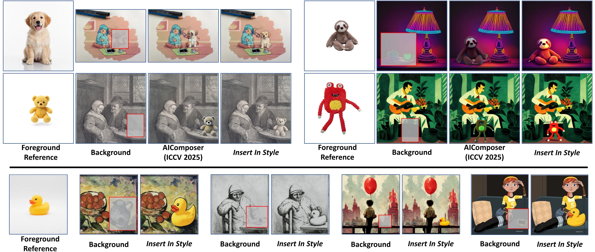
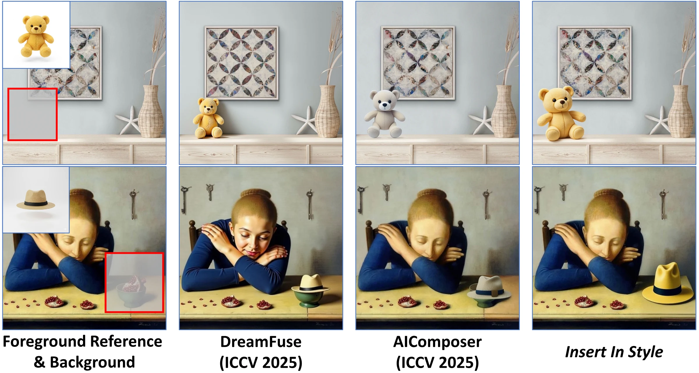
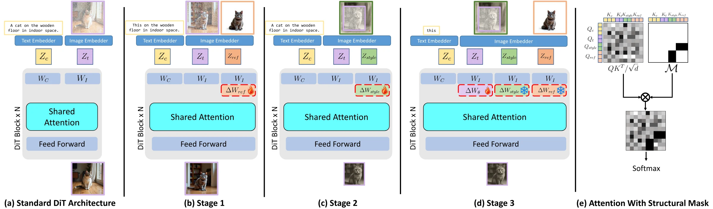
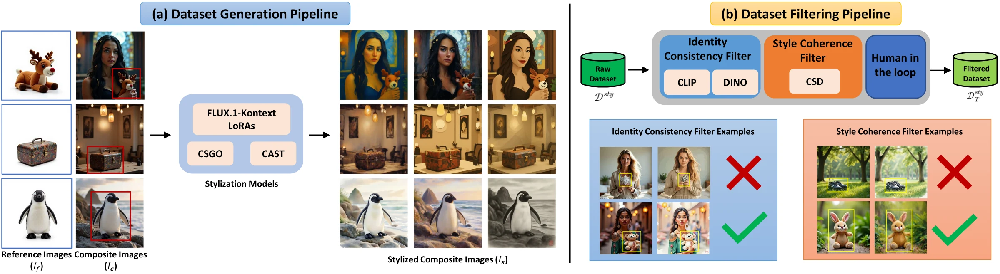
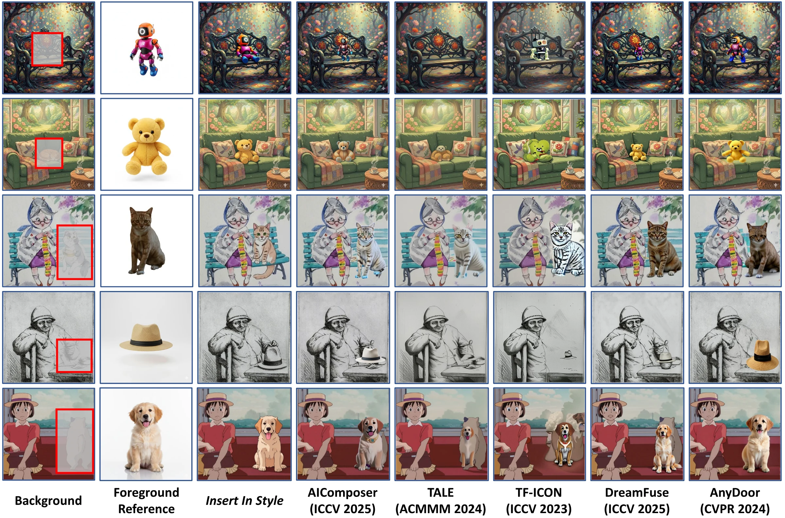
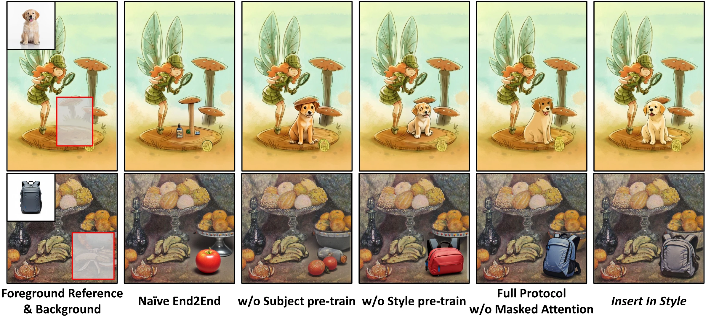
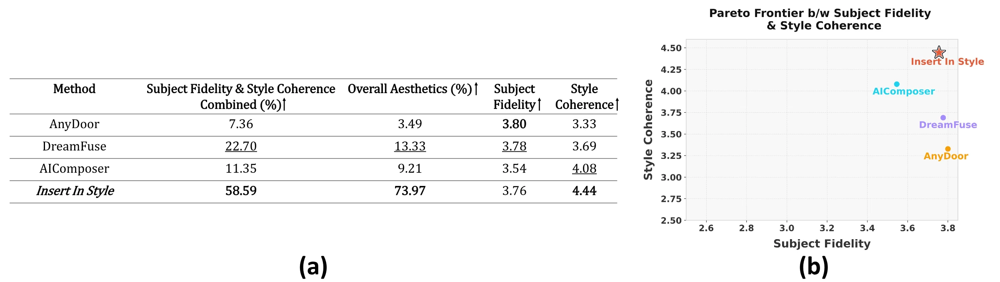
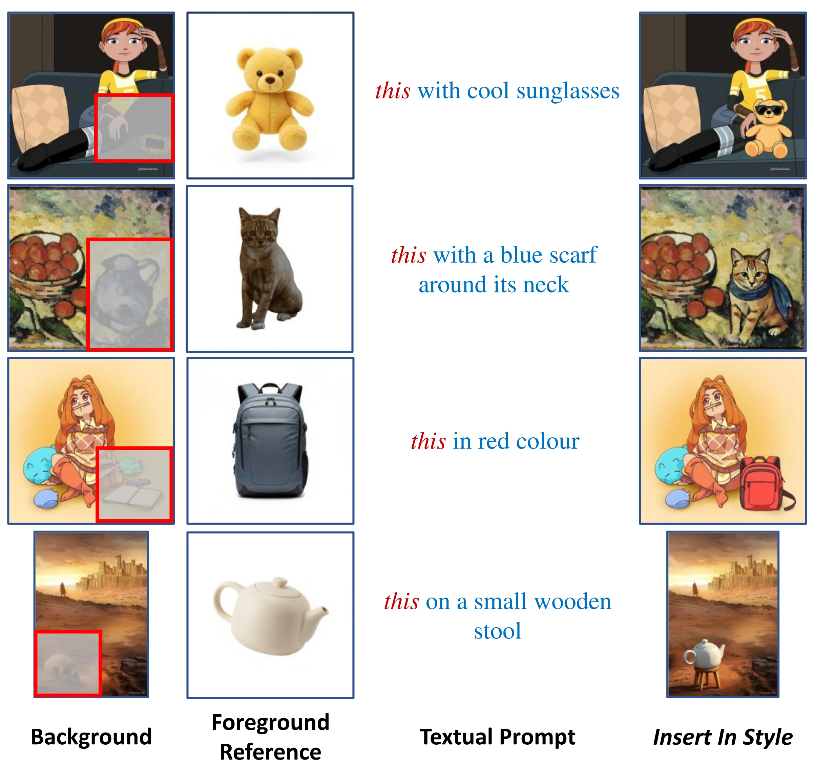

TL;DR. Give it a reference object, a stylized scene and a mask: Insert In Style generates the object in the scene's style while keeping its identity, with no per-subject finetuning.
Reference-based object composition becomes particularly challenging in cross-domain scenarios, where models must preserve the reference object's identity while harmonizing it to match stylized environments. This under-explored problem is currently split between practical "blenders" that lack generative fidelity and "generators" that require impractical, per-subject online finetuning. In this work, we introduce Insert In Style, the first zero-shot generative framework that is both practical and high-fidelity.
Our core contribution is a unified framework with three key innovations: (i) a novel multi-stage training protocol that disentangles representations for identity, style, and composition; (ii) a specialized masked-attention architecture that surgically enforces this disentanglement during generation; and (iii) complementary prior-preservation mechanisms that keep learned identity and style priors intact. By design, this approach mitigates concept interference typical in unified-attention architectures while ensuring robust generalization across diverse references and styles.
To power this framework, we further introduce a scalable data-generation pipeline that couples large-scale, multi-method generation with iterative, human-in-the-loop filtering, yielding a 115k-sample cross-domain corpus calibrated on human annotations for both identity preservation and style coherence. On public cross-domain benchmarks and our new Insert In Style Bench, Insert In Style consistently leads in joint identity and style performance, among existing methods in quantitative, qualitative, and human evaluations, while remaining competitive on in-domain, photorealistic composition.
In-domain composers keep identity but leave the object looking pasted in. Training-free blenders match style but cannot generate the object properly. Online generators need finetuning for every new subject. Insert In Style is generative, zero-shot and mask-aware.


On a frozen FLUX.1-dev backbone, an identity branch is trained on Subjects200K and a style branch on style-aware inpainting. Both are then frozen while a main-branch LoRA learns composition on the 115k corpus.
All branches attend to the text and image tokens, but the mask blocks attention between the identity and style tokens, so neither condition bleeds into the other.
Style-context dropout (p = 0.2) makes object structure come from the identity reference; a CSD-space loss on the masked, one-step denoised estimate keeps the object's style aligned with the frozen style model.

About 40k in-domain triplets are stylized with 20 FLUX.1-Kontext style LoRAs and with CSGO / CAST using Style30K references, giving roughly 350k stylized composites. Each filtering round scores every sample for identity (CLIP, DINO) and style (CSD) and removes the lowest decile on any score, until expert acceptance saturates:
Inference code for FLUX.1-dev with the three Insert In Style adapters, plus the evaluation metrics (CLIP-I, CSD, aesthetics).
Compact annotation files: DreamFuse triplet, style, subject boxes and CLIP / DINO / CSD scores, with scripts to regenerate the stylized images.
788 pairs with masks and our generated images; a script fetches and verifies the remaining images from their original sources.

| Method | CLIP-I ↑ | CSD ↑ | AES ↑ | Mean ↑ |
|---|---|---|---|---|
| AnyDoorCVPR'24 | 0.863 | 0.318 | 0.656 | 0.612 |
| DreamFuseICCV'25 | 0.758 | 0.449 | 0.681 | 0.629 |
| TF-ICONICCV'23 | 0.687 | 0.382 | 0.661 | 0.577 |
| TALEMM'24 | 0.671 | 0.462 | 0.695 | 0.609 |
| AIComposerICCV'25 | 0.768 | 0.430 | 0.692 | 0.630 |
| Insert In Style | 0.761 | 0.466 | 0.697 | 0.641 |
| Method | CLIP-I ↑ | CSD ↑ | AES ↑ | Mean ↑ |
|---|---|---|---|---|
| AnyDoorCVPR'24 | 0.831 | 0.382 | 0.611 | 0.608 |
| DreamFuseICCV'25 | 0.784 | 0.458 | 0.632 | 0.625 |
| TF-ICONICCV'23 | 0.714 | 0.438 | 0.584 | 0.579 |
| TALEMM'24 | 0.686 | 0.495 | 0.607 | 0.596 |
| AIComposerICCV'25 | 0.774 | 0.476 | 0.644 | 0.631 |
| Insert In Style | 0.779 | 0.481 | 0.655 | 0.638 |
Bold = best, underline = second best. CLIP-I measures subject identity, CSD style consistency with the scene, AES aesthetics. AnyDoor's high CLIP-I comes from pasting the subject without restyling it.
| Setting | CLIP-I | CSD | AES | Mean |
|---|---|---|---|---|
| Naïve end-to-end | 0.655 | 0.455 | 0.668 | 0.593 |
| w/o subject pre-train | 0.726 | 0.433 | 0.678 | 0.612 |
| w/o style pre-train | 0.778 | 0.399 | 0.676 | 0.618 |
| w/o masked attention | 0.758 | 0.452 | 0.690 | 0.633 |
| Full model | 0.761 | 0.466 | 0.697 | 0.641 |
| Setting | CLIP-I | CSD |
|---|---|---|
| w/o identity prior | 0.731 | 0.466 |
| w/o style prior | 0.763 | 0.432 |
| Full model | 0.761 | 0.466 |
Each prior protects one axis: removing the identity prior costs CLIP-I, removing the style prior costs CSD.

33 participants, blind and randomized. Insert In Style is preferred most often for both fidelity-with-style and overall aesthetics, and scores 4.44 / 5 for style coherence (next best 4.08).

A text prompt can edit the inserted object as it is composed: add accessories, change its colour or place it on something.

@inproceedings{chittersu2026insertinstyle,
title = {Insert In Style: A Zero-Shot Generative Framework for
Harmonious Cross-Domain Object Composition},
author = {Chittersu, Raghu Vamsi and Rathore, Yuvraj Singh and
Adlinge, Pranav and Pashaula, Eswar Sai and Swami, Kunal},
booktitle = {Proceedings of the 34th ACM International Conference on Multimedia},
year = {2026},
doi = {10.1145/3767308.3836447}
}